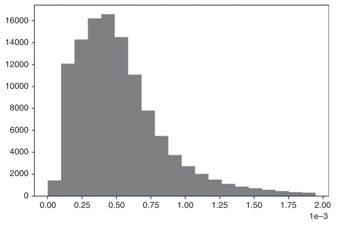
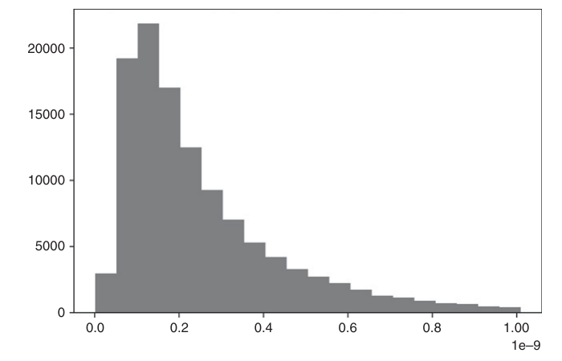
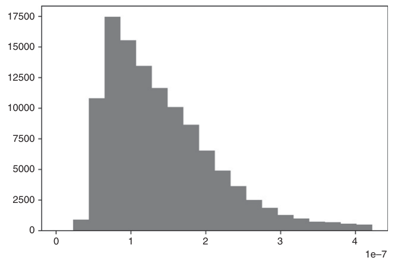

第四部分：有用的金融特征
微观结构特征
19.1 研究动机
市场微观结构研究"在显式交易规则下资产交换的过程与结果"（O'Hara [1995]）。微观结构数据集包含有关拍卖过程的原始信息，如撤单、双向竞价订单簿、队列、部分成交、主动成交方向、纠错、替换等。主要数据来源是金融信息 eXchange（FIX）消息，可从交易所购买。FIX 消息所包含的详细程度，使研究人员得以了解市场参与者如何隐藏和披露其交易意图。这使得微观结构数据成为构建预测性 ML 特征最重要的基础要素之一。
19.2 文献综述
市场微观结构理论的深度与复杂性随时间不断演进，与可用数据的数量和种类密切相关。第一代模型仅使用价格信息。那个早期阶段形成了两项奠基性成果：成交分类模型（如 tick 规则）和 Roll [1984] 模型。第二代模型出现在成交量数据集开始可获取之后，研究人员将关注点转向研究成交量对价格的影响。这一代模型的两个典型代表是 Kyle [1985] 和 Amihud [2002]。第三代模型出现于 1996 年之后，当时 Maureen O'Hara、David Easley 等人发表了"知情交易概率"（PIN）理论（Easley et al. [1996]）。这是一项重大突破，因为 PIN 将买卖价差解释为流动性提供者（做市商）与持仓方（知情交易者）之间序贯策略博弈的结果。其核心在于，做市商实质上是在出售被知情交易者逆向选择的期权，而买卖价差正是他们为此收取的期权费。Easley et al. [2012a, 2012b] 阐述了如何估计 VPIN，即在基于成交量采样下对 PIN 的高频估计，即成交量同步知情交易概率（VPIN）。上述是微观结构文献所采用的主要理论框架。O'Hara [1995] 和 Hasbrouck [2007] 提供了低频微观结构模型的优秀综述。Easley et al. [2013] 对高频微观结构模型进行了现代化的系统阐述。
19.3 第一代模型：价格序列
第一代微观结构模型致力于估计买卖价差和波动率，以此作为流动性不足的代理指标。这些模型在数据有限的条件下构建，且未对交易过程施加策略性或序贯性结构。
19.3.1 tick 规则
在双边报价簿中，市场参与者可在不同价格水平挂出卖出报价（卖盘）或买入报价（买盘）。卖出价始终高于买入价，否则将即时撮合成交。当买方匹配一笔卖盘，或卖方匹配一笔买盘时，交易即告达成。每笔交易均有买方和卖方，但仅有一方是交易的发起方。tick 规则是一种用于判断交易主动方/主动成交方向的算法。主动买入成交标记为"1"，主动卖出成交标记为"-1"，判断逻辑如下：
其中 \(p_t\) 为以 \(t=1,\ldots,T\)，且 \(b_0\) 被任意设定为 1。多项研究表明，尽管 tick 规则相对简单，但其分类准确率较高（Aitken and Frino [1996]）。其他竞争性分类方法包括 Lee and Ready [1991] 以及 Easley et al. [2016]。对 \(\{b_t\}\) 序列进行变换可获得具有信息量的特征。此类变换包括：（1）对其未来期望值进行卡尔曼滤波， \(E_t[b_{t+1}]\)；（2）对上述预测进行结构突变检验（第 17 章）；（3）计算 \(\{b_t\}\) 序列的熵（第 18 章）；（4）对 \(\{b_t\}\)进行 Wald-Wolfowitz 连续检验所得的 t 值；（5）对累积 \(\{b_t\}\) 序列进行分数阶差分， \(\sum_{i=1}^{t}b_i\) （第 5 章）；等等。
19.3.2 Roll 模型
Roll [1984] 是最早提出有效买卖价差成因解释的模型之一，旨在描述证券实际交易时所形成的有效买卖价差。这一模型颇具实用价值，因为买卖价差是流动性的函数，因此 Roll 模型可视为衡量证券流动性的早期尝试。考虑一个中间价序列 \(\{m_t\}\)，其中价格遵循无漂移项的随机游走，
因此价格变动 \(\Delta m_t=m_t-m_{t-1}\) 独立同分布地服从正态分布
当然，这些假设与所有实证观测均相悖——实证研究表明，金融时间序列存在漂移项、具有异方差性、表现出序列相关性，且收益率分布非正态。但如第2章所述，通过适当的采样方法，这些假设或许并非完全脱离实际。所观察到的价格， \(\{p_t\}\)，是在买卖价差上序贯交易的结果：
其中 \(c\) 为买卖价差的一半，且 \(b_t\in\{-1,1\}\) 为主动成交方向。Roll 模型假设买入与卖出的概率相等， \(P[b_t=1]=P[b_t=-1]=\frac{1}{2}\)，序列独立， \(E[b_t b_{t-1}]=0\)，且与噪声相互独立， \(E[b_t u_t]=0\)。基于上述假设，Roll 推导出 \(c\) 与 \(\sigma_u^2\) 的取值如下：
由此得到 \(c=\sqrt{\max\{0,-\sigma[\Delta p_t,\Delta p_{t-1}]\}}\) 和 \(\sigma_u^2=\sigma^2[\Delta p_t]+2\sigma[\Delta p_t,\Delta p_{t-1}]\)。综上所述，买卖价差是价格变动序列协方差的函数，而真实（未观测）价格的噪声（剔除微观结构噪声后）是观测噪声与价格变动序列协方差的函数。
19.3.3 高低价波动率估计量
Beckers [1983] 的研究表明，基于高低价的波动率估计量比基于收盘价的标准波动率估计量更为精确。Parkinson [1980] 推导出，对于服从几何布朗运动的连续观测价格，
其中 \(k_1=4\log[2]\), \(k_2=\sqrt{\frac{8}{\pi}}\), \(H_t\) 是该数据条/bar 的最高价 \(t\)，且 \(L_t\) 是该数据条/bar 的最低价 \(t\)。进而，波动率特征 \(\sigma_{HL}\) 可基于观测到的最高价与最低价进行稳健估计。
19.3.4 Corwin 与 Schultz
在 Beckers 研究的基础上 [1983]，Corwin 与 Schultz [2012] 提出了一种基于最高价与最低价的买卖价差估计量。该估计量基于两个原则：第一，最高价几乎总是与卖价（offer）成交，最低价几乎总是与买价（bid）成交，最高价与最低价之比同时反映了基本波动率和买卖价差；第二，最高价与最低价之比中由波动率引起的成分随两次观测之间所经历的时间成比例增加。Corwin 与 Schultz 证明，以价格百分比表示的价差可估计为
其中
且 \(H_{t-1,t}\) 是连续 2 个数据条/bar 的最高价 \((t-1,t)\)，而 \(L_{t-1,t}\) 是连续 2 个数据条/bar 的最低价 \((t-1,t)\)。由于 \(\alpha_t<0\Rightarrow S_t<0\)，作者建议将负的 alpha 值设为 0（参见 Corwin 与 Schultz [2012]，第 727 页）。代码清单 19.1 实现了该算法。corwinSchultz 函数接受两个参数：一个包含列（High, Low）的 series dataframe，以及一个整数值 \(sl\) 用于定义估计所用的样本长度 \(\beta_t\).
def getBeta(series,sl):
hl=series[['High','Low']].values
hl=np.log(hl[:,0]/hl[:,1])**2
hl=pd.Series(hl,index=series.index)
beta=pd.stats.moments.rolling_sum(hl,window=2)
beta=pd.stats.moments.rolling_mean(beta,window=sl)
return beta.dropna()
#---------------------------------------
def getGamma(series):
h2=pd.stats.moments.rolling_max(series['High'],window=2)
l2=pd.stats.moments.rolling_min(series['Low'],window=2)
gamma=np.log(h2.values/l2.values)**2
gamma=pd.Series(gamma,index=h2.index)
return gamma.dropna()
#---------------------------------------
def getAlpha(beta,gamma):
den=3-2*2**.5
alpha=(2**.5-1)*(beta**.5)/den
alpha-=(gamma/den)**.5
alpha[alpha<0]=0 # set negative alphas to 0 (see p.727 of paper)
return alpha.dropna()
#---------------------------------------
def corwinSchultz(series,sl=1):
# Note: S<0 iif alpha<0
beta=getBeta(series,sl)
gamma=getGamma(series)
alpha=getAlpha(beta,gamma)
spread=2*(np.exp(alpha)-1)/(1+np.exp(alpha))
startTime=pd.Series(series.index[0:spread.shape[0]],index=spread.index)
spread=pd.concat([spread,startTime],axis=1)
spread.columns=['Spread','Start_Time'] # 1st loc used to compute beta
return spread注意，波动率并未出现在最终的 Corwin-Schultz 方程中。原因在于，波动率已被其最高价/最低价估计量所替代。作为该模型的副产品，我们可以推导出 Becker-Parkinson 波动率，如代码清单 19.2 所示。
def getSigma(beta,gamma):
k2=(8/np.pi)**.5
den=3-2*2**.5
sigma=(2**-.5-1)*beta**.5/(k2*den)
sigma+=(gamma/(k2**2*den))**.5
sigma[sigma<0]=0
return sigma该方法在公司债市场中尤为有效——该市场没有集中化订单簿，交易通过竞争性报价（BWIC）进行。由此得到的特征买卖价差 S 可在滚动窗口上递归估计，并可用卡尔曼滤波器对估计值进行平滑处理。
19.4 第二代：战略交易模型
第二代微观结构模型侧重于理解和衡量非流动性。非流动性是金融 ML模型中一个重要的信息特征，因为它是一种附带风险溢价的风险。与第一代模型相比，这些模型具有更坚实的理论基础，将交易解释为知情交易者与非知情交易者之间的战略博弈，并因此重点关注带符号成交量和订单流不平衡。这些特征大多通过回归方法估计。在实践中，我观察到与这些微观结构估计量相关的 t 值比（均值）估计量本身更具信息价值。尽管现有文献未提及这一观察，但有充分理由认为基于 t 值的特征优于基于均值的特征：t 值经估计误差的标准差重新缩放，包含了均值估计中所缺失的另一维度信息。
19.4.1 Kyle's lambda（Kyle λ）
Kyle [1985] 提出了以下战略交易模型。考虑一种终值为 \(v\sim N[p_0,\Sigma_0]\)的风险资产，以及两类交易者：
- 一位噪声交易者，交易数量为 \(u\sim N[0,\sigma_u^2]\)，与 \(v\).
- 相互独立；一位知情交易者，知晓 \(v\) 并通过市价单提交数量为 \(x\)的需求。
做市商观测到总订单流 \(y=x+u\)，并据此设定价格 \(p\) 。在该模型中，做市商无法区分噪声交易者和知情交易者的订单。他们根据订单流不平衡调整价格，因为订单流不平衡可能预示着知情交易者的存在。因此，价格变动与订单流不平衡之间存在正相关关系，即市场冲击。知情交易者推测做市商采用线性价格调整函数， \(p=\lambda y+\mu\)，其中 \(\lambda\) 是流动性的反向度量。知情交易者的利润为 \(\pi=(v-p)x\)，在以下条件下取得最大值： \(x=\frac{v-\mu}{2\lambda}\)，二阶条件为 \(\lambda>0\).
反之，做市商推测知情交易者的需求是以下变量的线性函数： \(v\): \(x=\alpha+\beta v\)，这意味着 \(\alpha=-\frac{\mu}{2\lambda}\) 和 \(\beta=\frac{1}{2\lambda}\)。注意，流动性越低，意味着 \(\lambda\)越高，即知情交易者的需求越低。Kyle 认为，做市商必须在利润最大化与市场有效性之间寻求均衡，在上述线性函数条件下，唯一可能的解为：
最终，知情交易者的期望利润可改写为：
这意味着知情交易者的利润来源有三个：
- 证券的错误定价。
- 噪声交易者净订单流的方差。噪声越大，知情交易者越容易掩盖其交易意图。
- 终期证券方差的倒数。波动率越低，越容易将错误定价转化为收益。

在 Kyle 模型中，变量 \(\lambda\) 刻画了价格冲击。非流动性随对标的证券真实价值不确定性的增加而上升， \(v\) 并随噪声量的增加而降低。作为特征，可通过拟合如下回归方程来估计该指标：
其中 \(\{p_t\}\) 为价格时间序列， \(\{b_t\}\) 为主动方标志的时间序列， \(\{V_t\}\) 为成交量时间序列，因此 \(\{b_tV_t\}\) 为带符号成交量（即净订单流）的时间序列。图 19.1 绘制了在 E-mini S&P 500 期货序列上估计的 Kyle's lambda（Kyle λ）直方图。
19.4.2 Amihud's lambda（Amihud λ）
Amihud [2002] 研究了绝对收益与非流动性之间的正向关系。具体而言，他计算了与每美元成交量相关的日度价格响应，并认为该值可作为价格冲击的代理指标。该思路的一种可能实现方式为
其中 \(B_{\tau}\) 是包含在 bar 中的交易集合 \(\tau\), \(\tilde p_{\tau}\) 是 bar 的收盘价 \(\tau\)，且 \(p_tV_t\) 是交易中涉及的美元成交量 \(t\in B_{\tau}\)。尽管表面上看起来简单，Hasbrouck [2009] 发现日度 Amihud's lambda（Amihud λ）估计值与有效价差的日内估计值之间具有高度的秩相关性。图 19.2 展示了基于 E-mini S&P 500 期货序列估计的 Amihud's lambda（Amihud λ）分布直方图。

19.4.3 Hasbrouck's Lambda（Hasbrouck λ）
Hasbrouck [2009] 在 Kyle 和 Amihud 思路的基础上进一步拓展，利用逐笔报价（TAQ）数据估计价格冲击系数。他使用 Gibbs 采样器对以下回归规范进行贝叶斯估计
其中 \(B_{i,\tau}\) 是包含在 bar 中的交易集合 \(\tau\) 对于证券 \(i\)，其中 \(i=1,\ldots,I\), \(\tilde p_{i,\tau}\) 是 bar 的收盘价 \(\tau\) 对于证券 \(i\), \(b_{i,t}\in\{-1,1\}\) 表示交易 \(t\in B_{i,\tau}\) 为买方发起还是卖方发起；以及 \(p_{i,t}V_{i,t}\) 是交易中涉及的美元成交量 \(t\in B_{i,\tau}\)。然后我们可以估计 \(\lambda_i\) 对每只证券 \(i\)，并将其用作近似交易有效成本（市场冲击）的特征变量。与大多数文献一致，Hasbrouck 建议采用 5 分钟时间条（time bar）对 tick 进行采样。然而，如第 2 章所述，通过与市场活动同步的随机采样方法可以获得更好的结果。图 19.3 展示了基于 E-mini S&P 500 期货序列估计的 Hasbrouck's lambda（Hasbrouck λ）分布直方图。

19.5 第三代模型：序贯交易模型
如前一节所述，策略性交易模型中存在单个知情交易者，可在多个时点进行交易。本节将讨论另一类模型——随机选取的交易者依次独立到达市场的序贯交易模型。自问世以来，序贯交易模型在做市商中广受欢迎。原因之一在于，该模型纳入了流动性提供者所面临的各类不确定性来源，包括：信息事件发生的概率、该事件为负面事件的概率、噪声交易者的到达率以及知情交易者的到达率。基于上述变量，做市商须动态更新报价并管理自身库存。
19.5.1 知情交易概率（PIN）
Easley et al. [1996] 利用交易数据估算单个证券的知情交易概率（PIN）。该微观结构模型将交易视为做市商与头寸持有者之间在多个交易周期内重复进行的博弈。将证券价格记为 \(S\)，其当前价值为 \(S_0\)。然而，一旦一定量的新信息被纳入价格， \(S\) 将为 \(S_B\) （坏消息）或 \(S_G\) （好消息）。存在概率 \(\alpha\) 表示新信息将在分析时间范围内到达，概率 \(\delta\) 表示消息为坏消息，概率 \(1-\delta\) 表示消息为好消息。这些作者证明，证券价格的期望值可在时刻 \(t\) 时计算为
遵循泊松分布，知情交易者的到达率为 \(\mu\)，非知情交易者的到达率为 \(\varepsilon\)。为避免因知情交易者而遭受损失，做市商在买价水平 \(B_t\),
处达到盈亏平衡，而盈亏平衡卖价水平为 \(A_t\) 在时刻 \(t\) 必须为，
由此可得，盈亏平衡买卖价差由以下公式确定：
对于标准情形，当 \(\delta_t=\frac{1}{2}\)时，可得
该方程表明，决定做市商提供流动性价格区间的关键因素为
下标 \(t\) 表示各概率 \(\alpha\) 和 \(\delta\) 是在该时刻估计的。作者采用贝叶斯更新过程，在每笔交易到达市场后逐步纳入新信息。
为确定 \(PIN_t\)的值，我们需要估计四个不可观测参数，即 \(\{\alpha,\delta,\mu,\varepsilon\}\)。最大似然方法是拟合三个泊松分布的混合分布，
其中 \(V^B\) 为针对卖出报价成交的成交量（买方主动成交）， \(V^S\) 为针对买入报价成交的成交量（卖方主动成交）。
19.5.2 成交量同步知情交易概率（VPIN）
Easley et al. [2008] 证明了
特别地，当样本量足够大时， \(\mu\),
Easley et al. [2011] 提出了 PIN 的高频估计量，并将其命名为成交量同步知情交易概率（VPIN）。该方法采用成交量时钟，以成交量所捕捉的市场活跃程度为基准同步数据采样频率（参见第 2 章）。由此可以估计
其中 \(V_\tau^B\) 是成交量条内买方主动成交量之和 \(\tau\), \(V_\tau^S\) 是成交量条内卖方主动成交量之和 \(\tau\)，且 \(n\) 是用于估计的成交量条数量。由于所有成交量条的规模相同， \(V\)，因此由构造可知
因此，PIN 可在高频下估计为
关于 VPIN 的更多详情及案例研究，参见 Easley 等人 [2013]。Andersen 与 Bondarenko 利用线性回归 [2013] 得出结论：VPIN 并非波动率的良好预测指标。然而，多项研究发现 VPIN 确实具有预测能力：Abad 与 Yague [2012]、Bethel 等人 [2012]、Cheung 等人 [2015]、Kim 等人 [2014]、Song 等人 [2014]、Van Ness 等人 [2017]以及 Wei 等人 [2013]，不一而足。无论如何，线性回归早在 18 世纪便为数学家所熟知（Stigler [1981]），经济学家对其无法识别 21 世纪金融市场中复杂非线性模式一事不必感到意外。
19.6 来自微观结构数据集的其他特征
第 19.3 至 19.5 节所研究的特征均源自市场微观结构理论。此外，我们还应考虑那些虽非理论所明确指引、但我们判断其蕴含市场参与者行为方式及未来意图重要信息的替代特征。为此，我们将借助 ML 算法的力量——该类算法无需理论的明确指导，即可自主学习如何利用这些特征。
19.6.1 委托订单规模的分布
Easley et al. [2016] 研究了各交易规模对应的成交频率，发现整数规模的成交量异常频繁。例如，成交频率随交易规模的增大而迅速衰减，但整数规模的成交量除外 \(\{5,10,20,25,50,100,200,\ldots\}\)。这些作者将这一现象归因于所谓的"鼠标"或"GUI"交易者，即通过点击GUI（图形用户界面）上的按钮发送订单的人工交易者。以E-mini S&P 500为例，规模为10的下单频率是规模9的2.9倍；规模50出现的概率是规模49的10.9倍；规模100的频率是规模99的16.8倍；规模200的频率是规模199的27.2倍；规模250的频率是规模249的32.5倍；规模500的频率是规模499的57.1倍。这类规律在"硅基交易者"中并不常见，后者通常被编程为随机化交易以掩盖其在市场中的踪迹。一个有用的特征可能是确定整数规模交易的正常频率，并监测与预期值的偏差。例如，ML 算法可以判断整数规模交易占比异常偏高是否与趋势相关，因为人工交易者倾向于基于基本面观点、信念或判断进行下注。反之，整数规模交易占比异常偏低可能意味着价格横盘震荡的概率上升，因为硅基交易者通常不持有长期观点。
19.6.2 撤单率、限价单与市价单
Eisler 等人 [2012] 研究了市价单、限价单和报价撤销的市场冲击。这些作者发现，小盘股对上述事件的反应与大盘股存在差异。他们得出结论，衡量这些量值对于建模买卖价差的动态变化具有重要意义。Easley 等人 [2012] 同样认为，较高的报价撤销率可能是流动性不足的信号，因为市场参与者发布的报价本无意成交。他们将掠夺性算法分为四类：
- 报价填塞者（Quote stuffers）： 这类算法从事"延迟套利"。其策略是向交易所发送大量消息，唯一目的是拖慢竞争算法的速度，迫使对方解析那些只有发送者才知道可以忽略的消息。
- 报价诱饵者（Quote danglers）： 这一策略发送报价，迫使被挤压的交易者以不利于自身的价格追单。O'Hara [2011] 提供了其破坏性活动的实证证据。
- 流动性挤压者（Liquidity squeezers）： 当陷入困境的大型投资者被迫平仓时，掠夺性算法顺势同向交易，尽可能抽干流动性。由此导致价格超调，这些算法从中获利（Carlin 等人 [2007]）。
- 群猎者（Pack hunters）： 独立猎食的掠夺性算法会相互感知彼此的动向，进而形成"狼群"以最大化触发级联效应的概率（Donefer [2010]，Fabozzi et al. [2011]，Jarrow and Protter [2011]）。NANEX [2011] 展示了疑似狼群猎手强制触发止损的案例。尽管其个体行为规模过小，难以引发监管机构的怀疑，但其集体行为可能构成市场操纵。在这种情况下，极难证明其共谋，因为它们以去中心化、自发的方式进行协调。
这些掠夺性算法利用报价撤销和各类订单类型，试图对做市商实施逆向选择。它们在交易记录中留下不同的特征印记，对报价撤销率、限价单及市价单频率的度量，可作为反映其交易意图的有效特征。
19.6.3 时间加权平均价（TWAP）执行算法
Easley et al. [2012] 演示如何识别以特定时间加权平均价（TWAP）为目标的执行算法的存在。TWAP 算法将大额订单拆分为小额订单，以固定时间间隔提交，以期达到预设的时间加权平均价。这些作者抽取了 2010 年 11 月 7 日至 2011 年 11 月 7 日期间的 E-mini S&P 500 期货交易样本。他们将一天划分为 24 小时，对每小时内每秒的成交量进行汇总，不区分分钟。随后将这些汇总成交量绘制成曲面图，其中 x 轴对应每秒成交量，y 轴对应当日小时数，z 轴对应汇总成交量。此分析使我们得以观察一天内每分钟成交量的分布规律，并搜寻在时序时间空间上执行大额订单的低频交易者。在几乎每个小时内，一分钟内成交量的最大集中时段均倾向于出现在最初几秒：这在 00:00–01:00 GMT（亚洲市场开盘前后）、05:00–09:00 GMT（英国及欧洲股票市场开盘前后）、13:00–15:00 GMT（美国股票市场开盘前后）以及 20:00–21:00 GMT（美国股票市场收盘前后）尤为明显。一个有用的 ML 特征，可以是评估每分钟起始时刻的订单流不平衡，并判断其是否存在持续性成分。在大型机构投资者 TWAP 订单的较大部分仍处于待成交状态时，即可借此实施抢先交易。
19.6.4 期权市场
Muravyev et al. [2013] 利用美国股票和期权的微观结构信息，研究两个市场出现分歧的事件。他们通过推导由看跌-看涨平价报价所隐含的标的买卖价差区间，并将其与股票实际买卖价差进行比较，从而刻画这种分歧。他们的结论是：分歧往往以股票报价为准得以化解，即期权报价并不包含具有经济意义的信息。与此同时，他们确实发现期权成交中包含股价尚未反映的信息。这些发现对于习惯交易流动性相对较低产品（包括股票期权）的组合管理人而言并不意外。即便稀疏的成交价格具有信息含量，报价也可能在较长时期内保持非理性。Cremers 和 Weinbaum [2010] 发现，看涨期权相对昂贵的股票（波动率价差高且波动率价差变化幅度大的股票）相比看跌期权相对昂贵的股票（波动率价差低且波动率价差变化幅度小的股票），每周超额收益约为 50 个基点。当期权流动性较高而股票流动性较低时，这种可预测性更为显著。与上述观察相一致，可以通过计算由期权成交推导出的看跌-看涨隐含股价来提取有用特征。期货价格仅代表未来价值的均值或期望值，而期权价格则允许我们推导出被定价的结果的完整分布。ML 算法可以在不同行权价和到期日所报价的 Greeks 字母之间搜寻模式。
19.6.5 带符号订单流的序列相关性
Toth 等人 [2011] 研究了伦敦证券交易所股票的带符号订单流，发现订单方向在长达数天的时间里呈现正自相关。他们将这一现象归因于两种候选解释：羊群效应与订单拆分。他们的结论是：在数小时以内的时间尺度上，订单流的持续性绝大部分源于拆单行为，而非羊群效应。鉴于市场微观结构理论将订单流不平衡的持续性归因于知情交易者的存在，通过带符号成交量的序列相关性来衡量这种持续性的强度是合理的。这类特征可与第 19.5 节所研究的特征形成互补。
19.7 什么是微观结构信息？
让我以探讨我认为市场微观结构文献中一个重大缺陷来结束本章。大多数关于该主题的文章和著作研究信息不对称，以及策略性参与者如何利用信息不对称从做市商处获利。但在交易语境中，信息究竟是如何定义的？遗憾的是，信息在微观结构意义上并没有被普遍接受的定义，相关文献以一种出人意料地宽泛、相当不正式的方式使用这一概念（López de Prado [2017]）。本节基于信号处理理论提出一个关于信息的规范定义，可应用于微观结构研究。
考虑一个特征矩阵 \(X=\{X_t\}_{t=1,\ldots,T}\) 该矩阵包含做市商通常用于判断是否应在特定价位提供流动性或撤销被动报价的信息。例如，各列可以是本章讨论的所有特征，如 VPIN、Kyle's lambda（Kyle λ）、撤单率等。矩阵 \(X\) 每个决策点对应一行。例如，做市商可以每成交 10,000 手合约，或每当价格出现显著变动时（参见第 2 章的采样方法等），重新评估是继续提供流动性还是退出市场的决策。首先，我们推导一个数组 \(y=\{y_t\}_{t=1,\ldots,T}\) 对做市获利的观测值赋标签 1，对做市亏损的观测值赋标签 0（标签化方法详见第 3 章）。其次，在训练集上拟合一个分类器 \((X,y)\)。第三，当新的样本外观测值到达时 \(\tau>T\)，使用已拟合的分类器预测标签 \(\hat y_\tau=E_\tau[y_\tau\mid X]\)。第四，推导这些预测的交叉熵损失， \(L_\tau\)，方法如第 9 章第 9.4 节所述。第五，对负交叉熵损失数组 \(\{-L_t\}_{t=T+1,\ldots,\tau}\)拟合一个核密度估计器（），以推导其累积分布函数， \(F\)。第六，估计时刻 \(t\) 时计算为 \(\phi_\tau=F[-L_\tau]\)，其中 \(\phi_\tau\in(0,1)\).
这一微观结构信息可以理解为做市商决策模型所面临的复杂性。在正常市场条件下，做市商能够产生低交叉熵损失的知情预测，并可通过向仓位持有者提供流动性来获利。然而，当存在（具有信息不对称优势的）知情交易者时，做市商产生的预测缺乏信息含量，以高交叉熵损失衡量，并遭受逆向选择。换言之，微观结构信息只能相对于做市商的预测能力来定义和衡量。由此可见， \(\{\phi_\tau\}\) 应当成为您金融 ML 工具箱中的重要特征。
试想2010年5月6日闪崩事件。做市商错误地预测其挂于买方的被动报价能够成交并以更高价格回售。此次崩盘并非由单一预测失误所致，而是数千次预测错误累积的结果（Easley et al. [2011]）。若做市商当时持续监测其预测中不断攀升的交叉熵损失，便能识别出知情交易者的存在以及逆向选择概率的危险性上升。这将使他们能够将买卖价差扩大至足以遏制订单流不平衡的水平，因为卖方届时将不再愿意以如此大幅的折扣出售。然而，做市商持续以极为优厚的条件向卖方提供流动性，直至最终被迫止损，由此引发了一场令市场、监管机构和学术界震惊达数月乃至数年之久的流动性危机。
参考文献
- Abad, D. and J. Yague (2012): “From PIN to VPIN.” The Spanish Review of Financial Economics, Vol. 10, No. 2, pp.74-83.
- Aitken, M. and A. Frino (1996): “The accuracy of the tick test: Evidence from the Australian Stock Exchange.” Journal of Banking and Finance, Vol. 20, pp. 1715–1729.
- Amihud, Y. and H. Mendelson (1987): “Trading mechanisms and stock returns: An empirical investigation.” Journal of Finance, Vol. 42, pp. 533–553.
- Amihud, Y. (2002): “Illiquidity and stock returns: Cross-section and time-series effects.” Journal of Financial Markets, Vol. 5, pp. 31–56.
- Andersen, T. and O. Bondarenko (2013): “VPIN and the Flash Crash.” Journal of Financial Markets, Vol. 17, pp.1-46.
- Beckers, S. (1983): “Variances of security price returns based on high, low, and closing prices.” Journal of Business, Vol. 56, pp. 97–112.
- Bethel, E. W., Leinweber. D., Rubel, O., and K. Wu (2012): “Federal market information technology in the post–flash crash era: Roles for supercomputing.” Journal of Trading, Vol. 7, No. 2, pp. 9–25.
- Carlin, B., M. Sousa Lobo, and S. Viswanathan (2005): “Episodic liquidity crises. Cooperative and predatory trading.” Journal of Finance, Vol. 42, No. 5 (October), pp. 2235–2274.
- Cheung, W., R. Chou, A. Lei (2015): “Exchange-traded barrier option and VPIN.” Journal of Futures Markets, Vol. 35, No. 6, pp. 561-581.
- Corwin, S. and P. Schultz (2012): “A simple way to estimate bid-ask spreads from daily high and low prices.” Journal of Finance, Vol. 67, No. 2, pp. 719–760.
- Cremers, M. and D. Weinbaum (2010): “Deviations from put-call parity and stock return predictability.” Journal of Financial and Quantitative Analysis, Vol. 45, No. 2 (April), pp. 335–367.
- Donefer, B. (2010): “Algos gone wild. Risk in the world of automated trading strategies.” Journal of Trading, Vol. 5, pp. 31–34.
- Easley, D., N. Kiefer, M. O’Hara, and J. Paperman (1996): “Liquidity, information, and infrequently traded stocks.” Journal of Finance, Vol. 51, No. 4, pp. 1405–1436.
- Easley, D., R. Engle, M. O’Hara, and L. Wu (2008): “Time-varying arrival rates of informed and uninformed traders.” Journal of Financial Econometrics, Vol. 6, No. 2, pp. 171–207.
- Easley, D., M. López de Prado, and M. O’Hara (2011): “The microstructure of the flash crash.” Journal of Portfolio Management, Vol. 37, No. 2 (Winter), pp. 118–128.
- Easley, D., M. López de Prado, and M. O’Hara (2012a): “Flow toxicity and liquidity in a high frequency world.” Review of Financial Studies, Vol. 25, No. 5, pp. 1457–1493.
- Easley, D., M. López de Prado, and M. O’Hara (2012b): “The volume clock: Insights into the high frequency paradigm.” Journal of Portfolio Management, Vol. 39, No. 1, pp. 19–29.
- Easley, D., M. López de Prado, and M. O’Hara (2013): High-Frequency Trading: New Realities for Traders, Markets and Regulators, 1st ed. Risk Books.
- Easley, D., M. López de Prado, and M. O’Hara (2016): “Discerning information from trade data.” Journal of Financial Economics, Vol. 120, No. 2, pp. 269–286.
- Eisler, Z., J. Bouchaud, and J. Kockelkoren (2012): “The impact of order book events: Market orders, limit orders and cancellations.” Quantitative Finance, Vol. 12, No. 9, pp. 1395– 1419.
- Fabozzi, F., S. Focardi, and C. Jonas (2011): “High-frequency trading. Methodologies and market impact.” Review of Futures Markets, Vol. 19, pp. 7–38.
- Hasbrouck, J. (2007): Empirical Market Microstructure, 1st ed. Oxford University Press.
- Hasbrouck, J. (2009): “Trading costs and returns for US equities: Estimating effective costs from daily data.” Journal of Finance, Vol. 64, No. 3, pp. 1445–1477.
- Jarrow, R. and P. Protter (2011): “A dysfunctional role of high frequency trading in electronic markets.” International Journal of Theoretical and Applied Finance, Vol. 15, No. 3.
- Kim, C., T. Perry, and M. Dhatt (2014): “Informed trading and price discovery around the clock.” Journal of Alternative Investments, Vol 17, No. 2, pp. 68-81.
- Kyle, A. (1985): “Continuous auctions and insider trading.” Econometrica, Vol. 53, pp. 1315– 1336.
- Lee, C. and M. Ready (1991): “Inferring trade direction from intraday data.” Journal of Finance, Vol. 46, pp. 733–746.
- López de Prado, M. (2017): “Mathematics and economics: A reality check.” Journal of Portfolio Management, Vol. 43, No. 1, pp. 5–8.
- Muravyev, D., N. Pearson, and J. Broussard (2013): “Is there price discovery in equity options?” Journal of Financial Economics, Vol. 107, No. 2, pp. 259–283.
- NANEX (2011): “Strange days: June 8, 2011—NatGas Algo.” NANEX blog. Available at www.nanex.net/StrangeDays/06082011.html.
- O’Hara, M. (1995): Market Microstructure, 1st ed. Blackwell, Oxford.
- O’Hara, M. (2011): “What is a quote?” Journal of Trading, Vol. 5, No. 2 (Spring), pp. 10–15.
- Parkinson, M. (1980): “The extreme value method for estimating the variance of the rate of return.” Journal of Business, Vol. 53, pp. 61–65.
- Patzelt, F. and J. Bouchaud (2017): “Universal scaling and nonlinearity of aggregate price impact in financial markets.” Working paper. Available at https://arxiv.org/abs/1706.04163.
- Roll, R. (1984): “A simple implicit measure of the effective bid-ask spread in an efficient market.” Journal of Finance, Vol. 39, pp. 1127–1139.
- Stigler, Stephen M. (1981): “Gauss and the invention of least squares.” Annals of Statistics, Vol. 9, No. 3, pp. 465–474.
- Song, J, K. Wu and H. Simon (2014): “Parameter analysis of the VPIN (volume synchronized probability of informed trading) metric.” In Zopounidis, C., ed., Quantitative Financial Risk Management: Theory and Practice, 1st ed. Wiley.
- Toth, B., I. Palit, F. Lillo, and J. Farmer (2011): “Why is order flow so persistent?” Working paper. Available at https://arxiv.org/abs/1108.1632.
- Van Ness, B., R. Van Ness, and S. Yildiz (2017): “The role of HFTs in order flow toxicity and stock price variance, and predicting changes in HFTs’ liquidity provisions.” Journal of Economics and Finance, Vol. 41, No. 4, pp. 739–762.
- Wei, W., D. Gerace, and A. Frino (2013): “Informed trading, flow toxicity and the impact on intraday trading factors.” Australasian Accounting Business and Finance Journal, Vol. 7, No. 2, pp. 3–24.